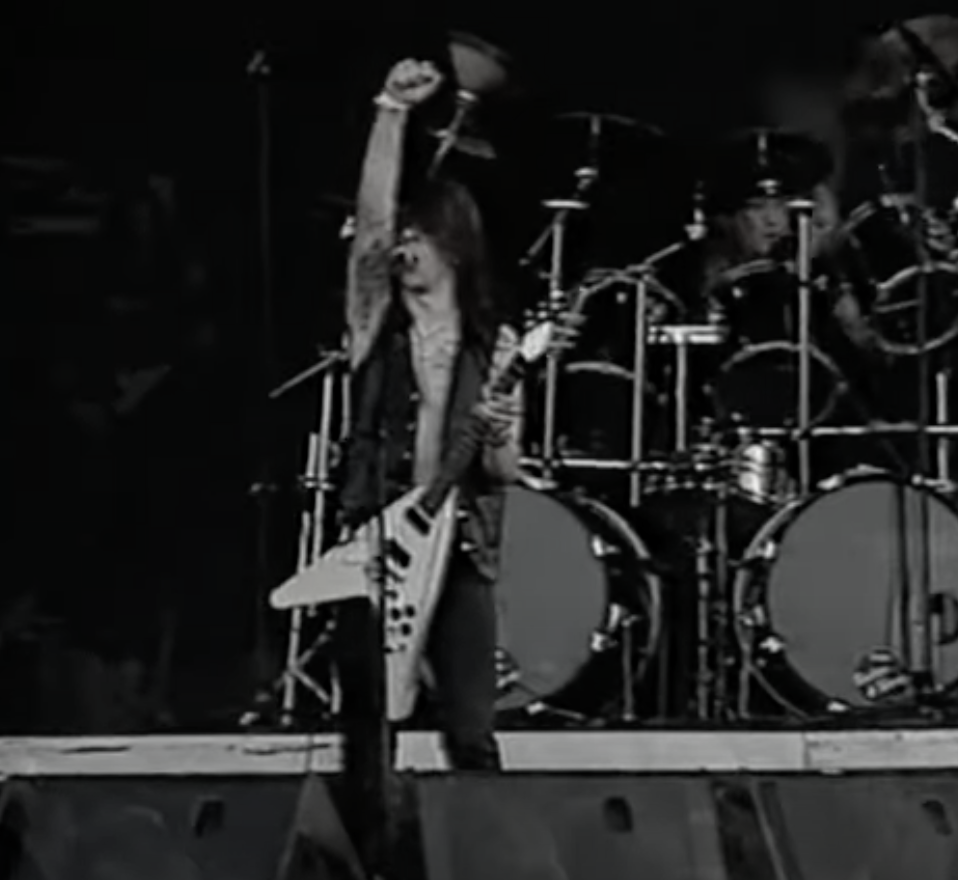

BLACK METAL
Black metal is an extreme subgenre of heavy metal music.
Common traits include fast tempos, a shrieking vocal style,heavily distorted guitars played with tremolo picking, raw (lo-fi) recording,
unconventional song structures, and an emphasis on atmosphere.
Artists often appear in corpse paint and adopt pseudonyms.
During the 1980s, several thrash metal and death metal bands formed a prototype for black metal.
This "first wave" included bands such as Venom, Bathory, Mercyful Fate, Hellhammer and Celtic Frost.
A second wave arose in the early 1990s, spearheaded by Norwegian bands such as Mayhem, Darkthrone, Burzum, Immortal, Emperor, Satyricon and Gorgoroth.
The early Norwegian black metal scene developed the style of their forebears into a distinct genre.
Norwegian-inspired black metal scenes emerged throughout Europe and North America, although some other scenes developed their own styles independently.
Some prominent Swedish bands spawned during this second wave, the second generation in Sweden being led by Dissection, Abruptum, Marduk,nd Nifelheim.
Initially a synonym for "Satanic metal", black metal has often sparked controversy, due to the actions and ideologies associated with the genre.
Some artists express misanthropic views, and others advocating various forms of extreme anti-Christian sentiment, Satanism, or ethnic paganism.
In the 1990s, members of the scene were responsible for a spate of church burnings and murders.
There is also a small neo-Nazi movement within black metal, although it has been shunned by many prominent artists.
Generally, black metal strives to remain an underground phenomenon.